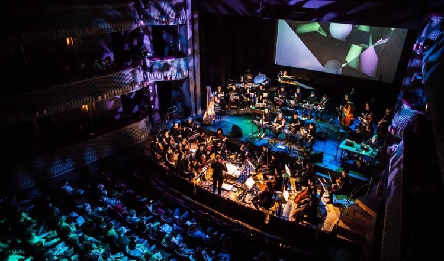
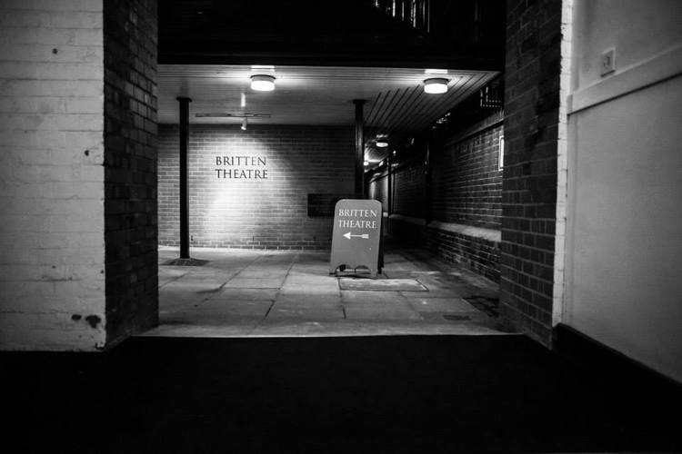
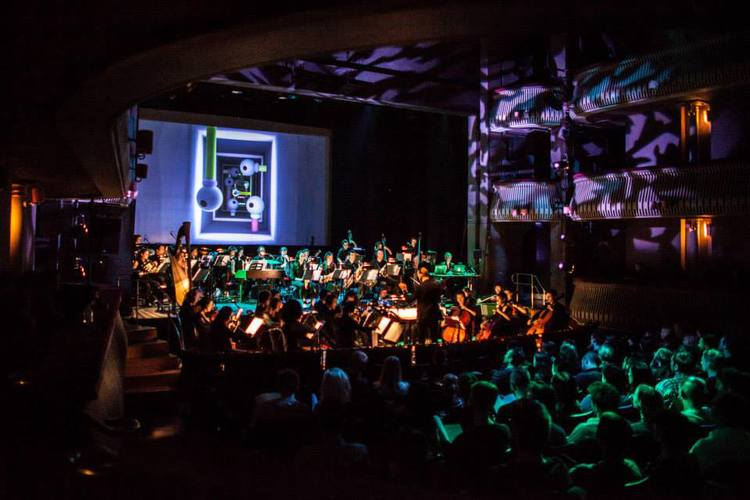

Formed in 2013, the London Electronic Orchestra is a project by Kate Simko that meshes the lush textures of classical instruments with the rhythms and soundscapes of electronic music.
On March 2014, Kate collaborated with masomenos to create an interactive audio-visual show at the Britten Theatre of the Royal College of Music. An original 3D scenography was composed by masomenos with the use of custom A/V composer.
Kate organized a 40-piece orchestra of musicians from the Royal College of Music and a program of original music and orchestral covers of electronic music. The music came to life with the interactive visuals by masomenos.
The visual system was orchestrated by a custom software that I developed as part of my collaboration with masomenos for the Color Piano project. The software takes live cues from Ableton Live so that each pitch triggers a visual reaction, creating an overall complex texture of live sound and visuals.


